Solo el 30 % de los argentinos confía en los medios: el nivel más bajo de los 47 mercados relevados. ¿Cómo verificás lo que acabás de leer sin irte de donde estás?
La verificación profesional revisa las afirmaciones de a una y casi siempre después de que ya circularon. El desbalance no es de rigor: es de escala.
Intención de uso 4,06 contra confianza en el puntaje automático 3,57. El segmento quiere la herramienta pero no le cree del todo al número — y la confianza baja cuanto más sabe el usuario. La evidencia deja de ser una prestación de la interfaz y pasa a ser condición de uso.
«No se resuelve con un modelo más potente sino con la explicación.» Si no permite llegar a la fuente, se deja de usar.
Lo que se teme no es el error técnico sino la toma de partido. El miedo al «árbitro de la verdad».
El producto es un primer filtro. La resistencia crece con el conocimiento del usuario, no baja.
Las cuatro soluciones automáticas puntúan 0 o 1 en accesibilidad ciudadana. La única accesible puntúa 0 en automatización y en velocidad. Esa intersección vacía es el espacio que ocupa la propuesta.
La extensión de Chrome, sin costo. No es filantropía ni gancho comercial: es la fuente del dato.
API de detección por volumen y reportes de tendencias por suscripción. Se vende qué desinformación circula en Argentina ahora, no la extensión.
| Competidores | Esta propuesta |
|---|---|
| Scraping de APIs: USD 5.000 a 42.000 por mes | Sensor en el navegador: costo cero |
| Mide qué se publica | Mide qué se consume |
| Cuantos más usuarios, mejor el dato; mejor el dato, mejor el producto pago | |
Lee el texto de la publicación y estima cuán sospechoso es. Un modelo de lenguaje multilingüe ajustado al español.
Mira las señales públicas de la cuenta. No implementado todavía.
Busca qué dicen las fuentes confiables sobre esa misma afirmación.
Junta los tres resultados y decide el veredicto final.
El sistema solo busca en una lista cerrada de fuentes, y las muestra ordenadas por peso:
INDEC · BCRA · InfoLEG · Boletín Oficial · sitios del Estado
Infobae · Clarín · La Nación · Página/12 · Télam
Chequeado · Reverso · AFP Factual
Y la regla que ordena todo lo demás: si no encuentra ninguna fuente, no emite veredicto. Lo dice en lugar de opinar.
Devuelve un valor arbitrario y pesa cero en el puntaje. Aparece marcado sin dato en la interfaz. Una medición a medias sería peor que un valor declaradamente inventado.
No hay entrevista a una organización de verificación. Está gestionada sin respuesta dentro del plazo y queda para la Entrega 4.
Ningún dataset público la contiene: todos etiquetan afirmaciones ya verificadas. Solo se aprende del corpus propio, y eso la vuelve una condición del diseño y no un extra.
Los tres son recortes declarados, no omisiones.
El objetivo no es que el usuario le crea al veredicto. Es que pueda prescindir de él: el sistema entrega el camino hacia la evidencia, no solamente la conclusión.
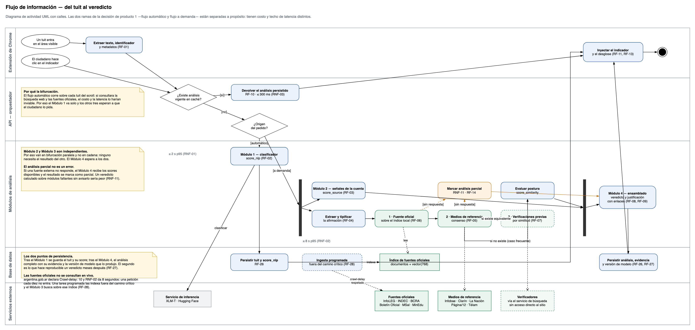
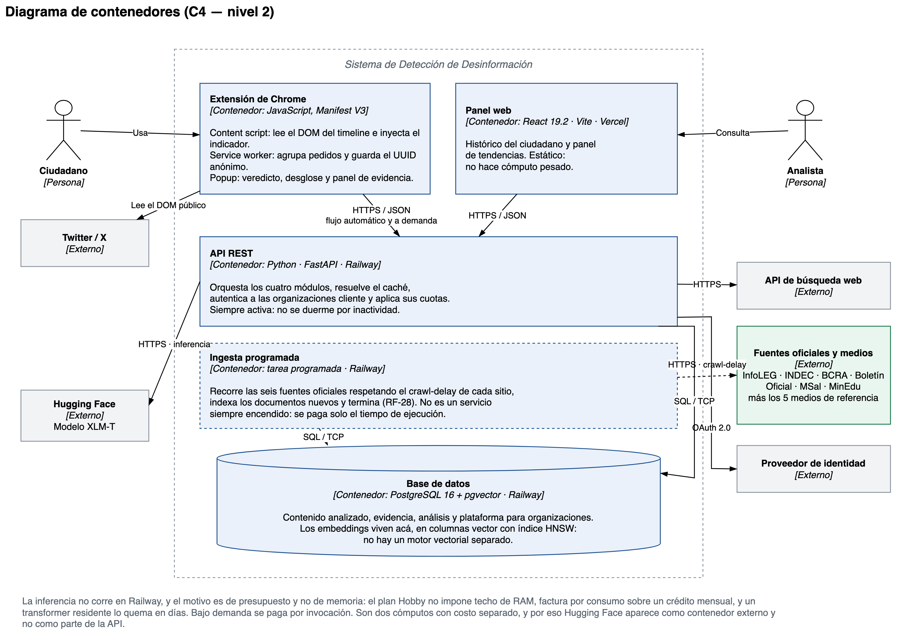
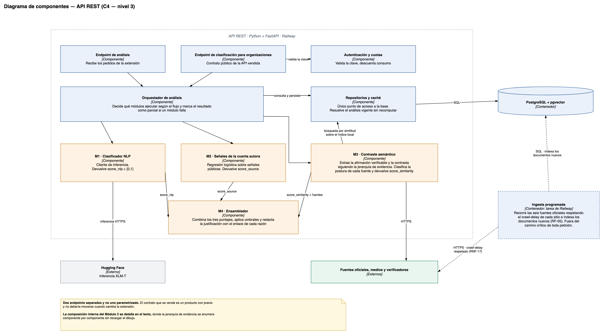
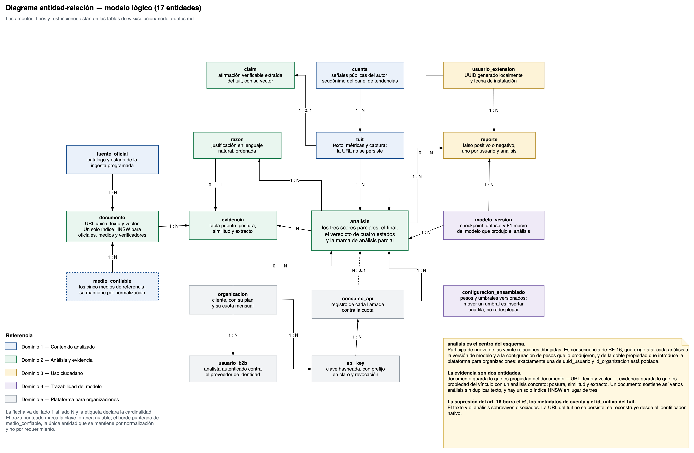
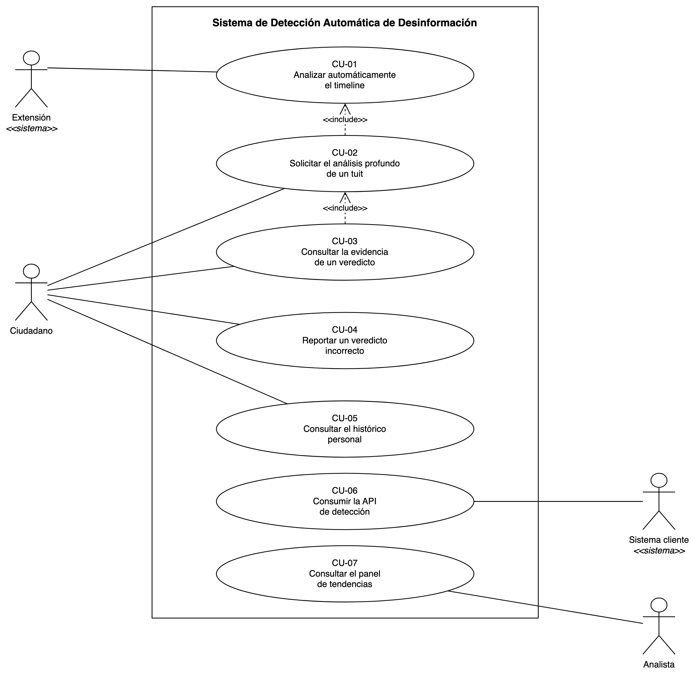
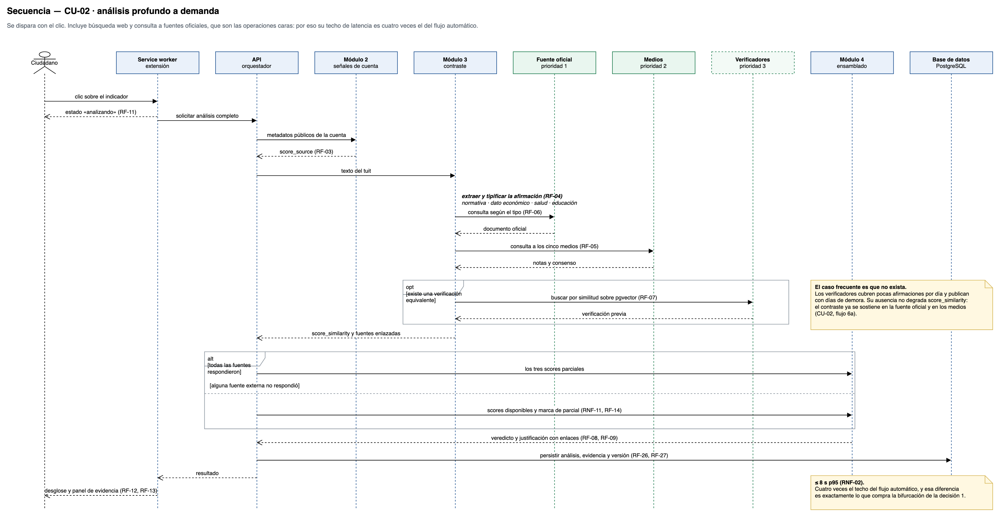
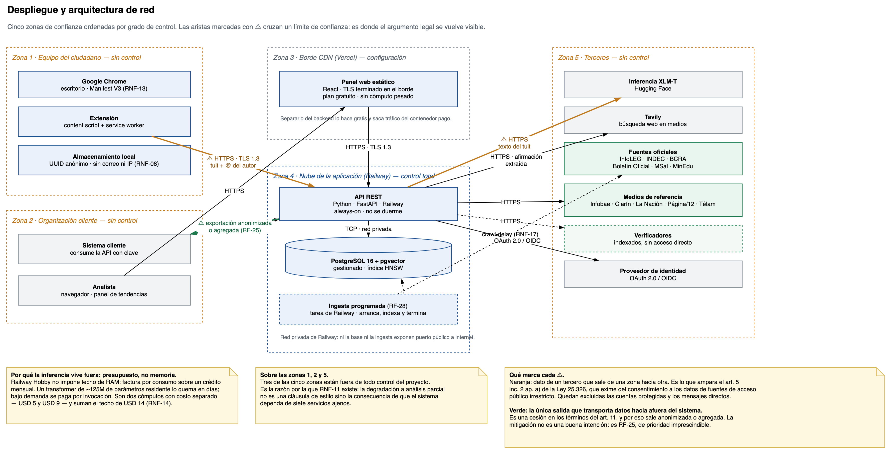
RNF-02: ocho segundos en el percentil 95 para el paso de evidencia. RNF-05: F1 macro de 0,80. RNF-06: sin evidencia no se emite veredicto. RNF-07: el nivel severo exige fuente oficial. RNF-11: degradación a análisis parcial. RNF-16: pesos y umbrales configurables.
version_configuracion_pesos, que se calcula como huella de los valores en uso — no se escribe a mano, así que no puede quedar desactualizada.Demostrable en vivo: analizar una publicación, levantar el servicio con otro peso, volver a analizarla y ver moverse el puntaje y, si cruza un umbral, el veredicto.
| Nivel | Fuente | Volumen |
|---|---|---|
| Transferencia | Corpus en inglés, sin traducir — posible solo porque el modelo es multilingüe | ~36.000 |
| Adaptación | FakeDeS, en español | 971 |
| Corpus propio | Argentino, subproducto de la operación del sistema (RF-16) | 2.000 a 5.000 · 300 a 500 anotados para test |
Ningún dataset externo aporta ejemplos de la clase sin verificar, porque todos etiquetan afirmaciones ya verificadas.
robots.txt verificado sitio por sitio para las tres modalidades de obtención.Las cinco variables de la izquierda son capacidades cuya construcción se descartó: en ellas conviene un valor menor, y la propuesta obtiene los más bajos del conjunto. Chequeado la iguala en evidencia verificable.
| Solución | Tipo | Limitación principal |
|---|---|---|
| Information Tracer | SaaS comercial | Sin soporte para español; no verifica hechos |
| Newtral FactFlow | Profesional cerrado | Limitado a Telegram y a verificadores |
| Cyabra | SaaS empresarial | Orientado a grandes clientes; cerrado |
| Blackbird.AI | SaaS empresarial | Precio empresarial; orientado a organizaciones |
| Chequeado | Verificación manual | No escala; sin capa ciudadana |
| Esta propuesta | Extensión gratuita + API | Twitter/X únicamente; sin cobertura de WhatsApp |
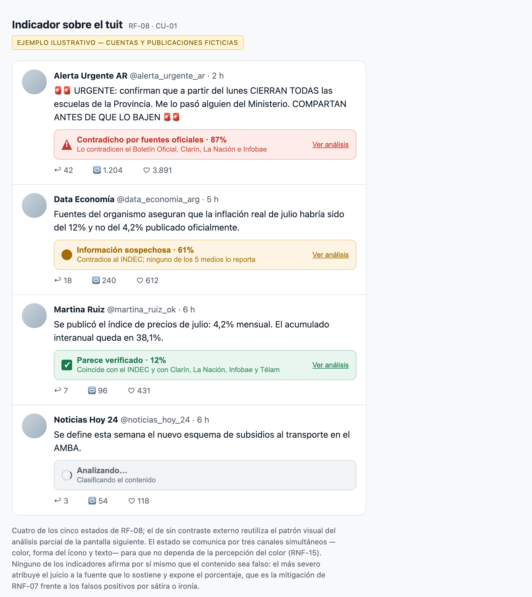
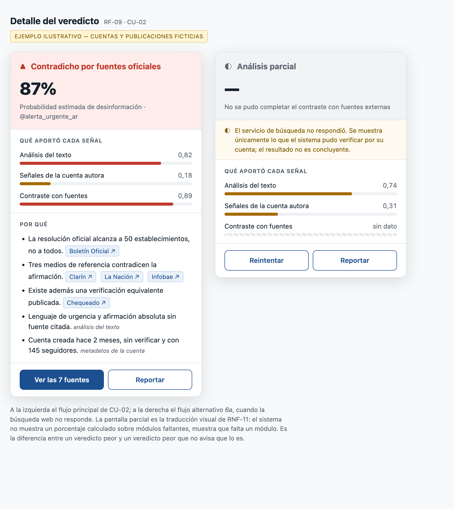
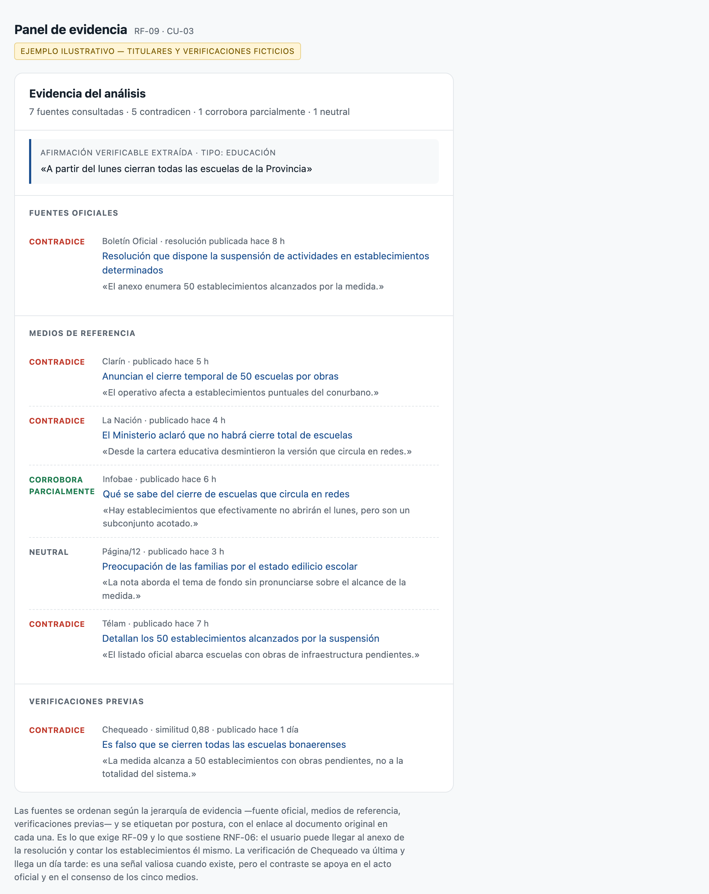
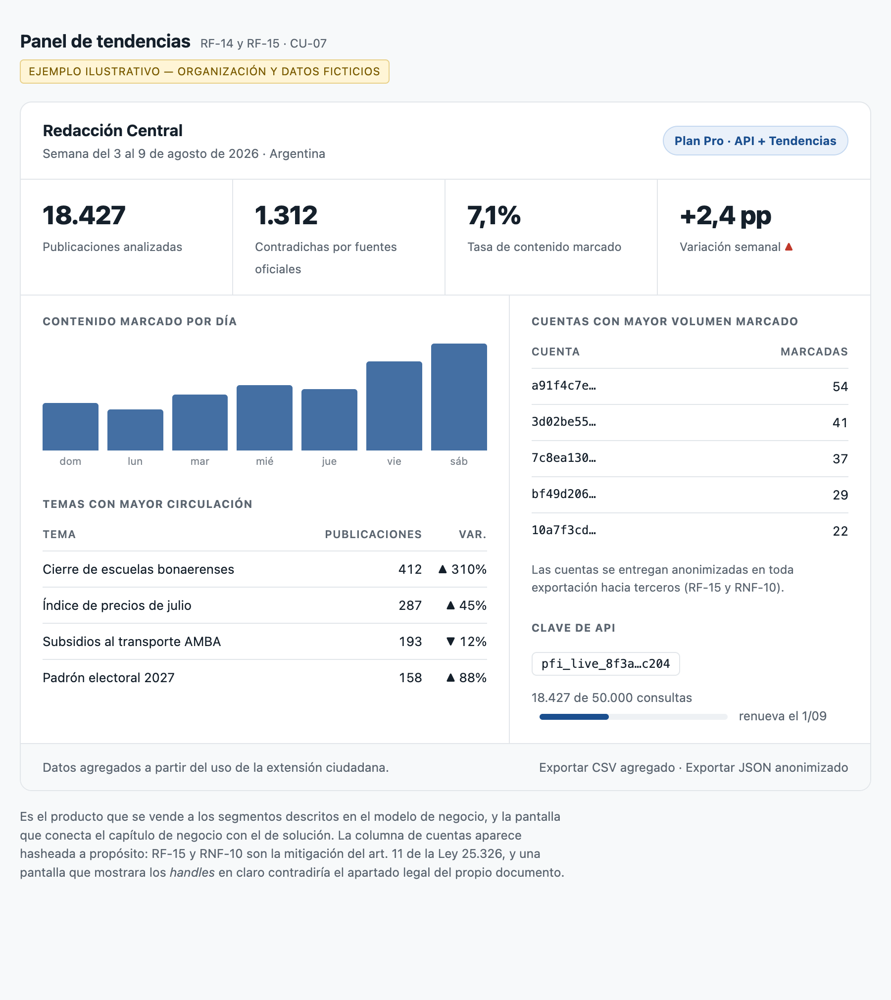
La cátedra dejó la parte económica fuera del alcance de esta entrega. El cargo de publicación en la Chrome Web Store queda como costo diferido: la extensión no se publica en el marco del PFI.